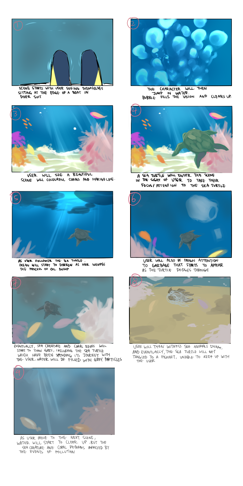
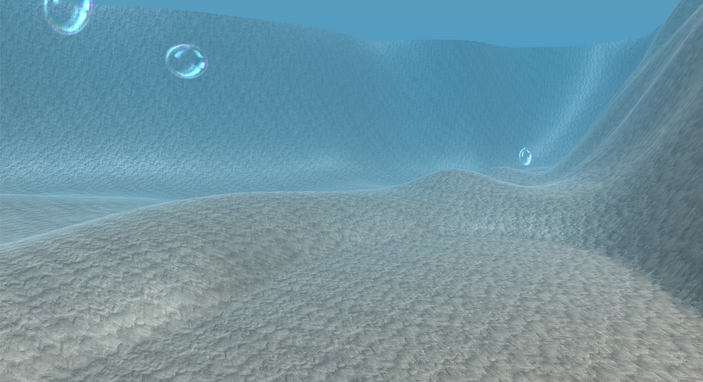
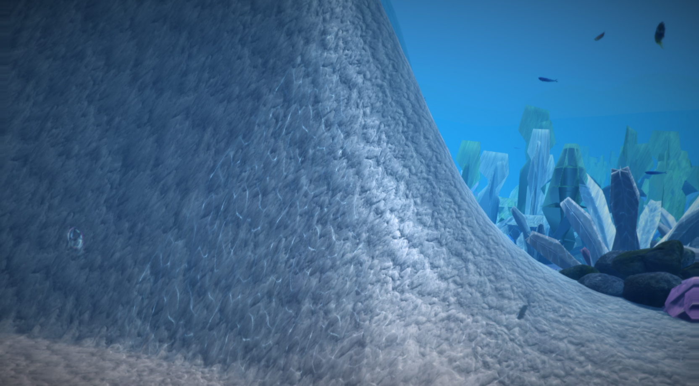
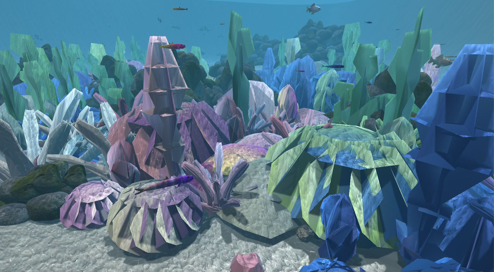
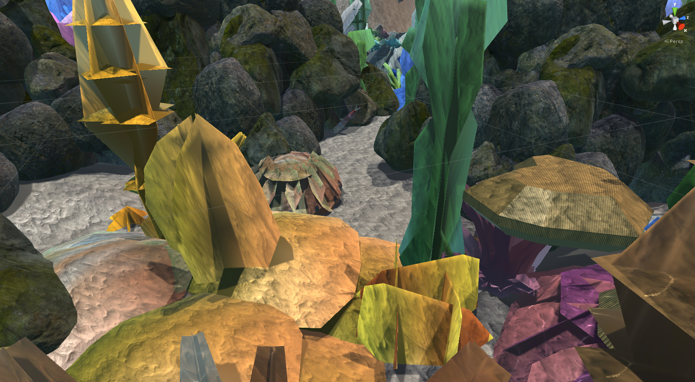
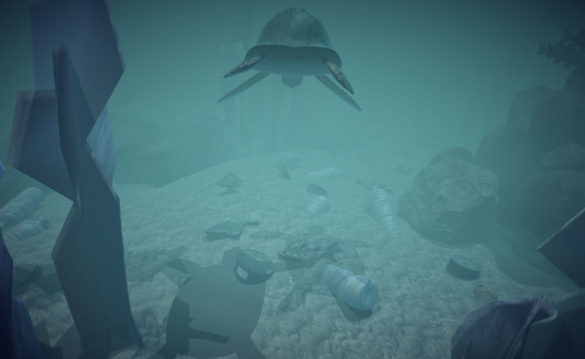
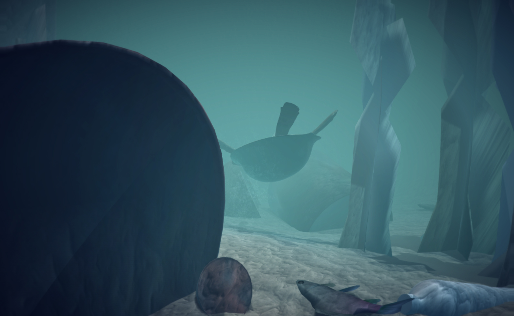

Course Type: Immersive Environments at SFU
Project Name: REEF
Project Year: 2016
REEF is an immersive virtual reality environment I created in a team of three to bring awareness to the worsening situation of ocean pollution. The goal of REEF is to provide a better understanding of just how much of an effect human pollution has on the underwater ecosystem through empathy for marine life.
By taking on the role of a scuba diver diving at the Great Barrier Reef, the user can have a first-person underwater perspective, with the freedom to look in all directions. The camera is animated to follow a wild sea turtle, a character which acts as a guide to take the user on a journey through two versions of the Great Barrier Reef: the beautiful, vibrant coral ecosystem teeming with healthy inhabitants that the user expects to see and a desaturated, highly polluted environment with dying marine life.
Game and environmental design, immersive design, building scenes in Unity, animating camera/assets in Unity, scripting with C#.
The final product is a VR environment that can be run as a Unity application, which can be viewed with a video of the entire immersive experience. The user can look around the scene by moving their head with the VR headset on (or with a mouse when viewing the scene without a VR headset). Screenshots taken from the application show the difference between the healthy Great Barrier Reef and the polluted reef.
Our goal is to evoke empathy within the user by using the sea turtle companion and the background marine life. In the second scene, the user is confronted with murky waters and many dead fish - all of which were swimming happily in the first scene. The wild sea turtle companion is not exempt from the effects of human pollution and eventually meets a tragic fate as well.
The project was featured in a TEDx Talk by Associate Professor at Simon Fraser University, Bernhard Rickie. The talk, titled "Could Virtual Reality make us more human?" centers around the prospect of virtual reality going beyond entertainment, and being used for creating positive or transformative experiences that could have real impacts on society. Professor Rickie gives the example of scubadiving among reefs in Indonesia as a real-life, visceral experience that cannot be replicated through video and images alone. REEF is based on the Great Barrier Reef, but seeks to bring a similarly compelling visceral experience digitally through VR.
I was responsible for the majority of our original idea, which was to create an underwater environment where the user, as the scuba diver, could move around freely using the wasd keys on the keyboard. We wanted to create an environment the user could explore, and perhaps even be able to interact with certain objects or fish. Our concept was for the ocean environment to gradually show signs of pollution as the user continued swimming forward, and eventually the waters around the user would become completely polluted. The ending consisted of the pollution clearing up slightly to leave hope in the user. There was no sea turtle companion in this idea.
However, we ran into the issue of being unable to evoke strong empathy within the user, as well as the user possibly spending too much time in one scene or area with nothing leading them to the second scene. We decided on adding a sea turtle to act as a companion and guide the user through the environment. The following storyboard (drawn by my teammate, Alicia Wong) illustrates our improved concept.
The ocean environment I created in Unity went through many iterations over the course of four months. I began the process by researching photos of the Great Barrier Reef and videos of underwater gameplay in games in order to understand how I needed to build the scene to be convincingly underwater. I also looked for videos of underwater scenes created by other Unity users to see what could be done in Unity. The first iteration of my environment was simply a terrain I shaped and textured to resemble the ocean floor, along with colored fog and animated bubbles (from the asset floor) I attached to the camera.
Then, I coded the movement controls of the user. This proved to be a very difficult task, as I was not familiar with C# or javascript (only having experience in Java), and had to translate my knowledge of Java into C#. I also found it challenging to script "flying" movement, due to limitations on Unity's first person controller. Eventually (with the help of many online tutorials) I successfully coded movement in all directions for the camera using wasd keyboard controls. I also tweaked the gravity, acceleration, and speed of the user to mimic swimming - ensuring that there was a convincing force acting against the user so they felt as though they were moving in water.
However, I was not satisfied with the visual component of the scene. It did not feel realistic, as it was lacking in the depth and gradient of a real ocean. Unfortunately, the other underwater Unity scenes I previously found were also lacking, so I could not find help there. I spent many hours researching Unity effects and stumbled upon post-processing effects applied to the camera. After trying out various post-processing effects with different settings, I was finally able to achieve immersive and somewhat realistic visuals for my ocean scene.
The next challenge was placing assets in order to create a bustling coral ecosystem. My teammate Rosanne Wong found untextured plant assets and combined them into coral reef shapes while Alicia Wong created color textures for them. I placed the coral reefs, rocks, and fish around the scene - constantly referring to photos of real reefs so the environment would look convincing. I also applied the color textures deliberately to every coral reef, taking into consideration the nearby reef colors and spreading the colors out so they were not random or too clustered.
The image above shows the complexity of the underwater ocean environment I designed. The image below illustrates details added throughout the scene, such as little rocky nooks with hiding fish and caustic rays on the ocean floor. The visual post-processing effects are disabled for these images in order to show them clearly.
I also built all of the rock formations in the scene. I used single-rock or single-boulder assets from the Unity asset store and duplicated/rotated/resized them to form rock clusters. The cave below was created from over 50 individually-placed rocks. I also took single-fish assets and formed groups of differently colored/sized fish.
After all assets were placed, I worked on the marine life's movement animation. The fish and whale assets came with pre-animated swimming gestures. I animated their movement paths through the scene, ensuring that their paths were long and circular so the fish would not simply swim off and disappear forever. I also animated the sea turtle's movement path. Since the sea turtle is a main character, it did not have a looping circular path. Instead, every angle, turn, and position was deliberately animated to lead the user through details in the scene.
Although I was responsible for the creation of the entire healthy ocean environment, my teammate Rosanne Wong worked on half of the polluted environment. After I finished the healthy scene, she duplicated my scene, changed the coral textures to dull ones (also created by Alicia Wong), and added dead fish, water bottles, and other debris to the scene.
Lastly, I animated the camera in the scene. Our original idea was to allow the user to move in all directions, but we had to change the idea to a pre-animated camera due to our first person controller being incompatible with VR (which I go into more detail in the next section). The camera was not attached to the turtle to follow the animal's animation, as the turtle's purpose was to act as a guide and it would not be convincing if the user followed the turtle's every movement. Instead, I animated every frame of the camera to roughly match the turtle's movement path, but allowed the turtle to move beyond the camera's line of sight at moments. I strived to make the camera movement - which was the perspective of a scuba diva - more realistic by also stopping or slowing down the camera at certain points so the user can look around.
We ran into many, many problems during the creation of this project. Many of them stemmed from the fact that no one in the team had a background in coding or scripting, and everyone was relatively new to using Unity. As I was the one with the most coding experience, I became responsible for all scripting that needed to be done. As previously mentioned, I had successfully coded a first person controller to move in all directions with a somewhat realistic force acting on it to simulate water pressure. However, when it came time to test the compatibility of our half-finished scene with VR, we found that Unity's default first person controller (which was what I used as my base to code) was not compatible with VR. Instead, we needed a special VR player controller.
Unfortunately, my experience in coding was not enough to edit the scripts behind the VR player controller. My team and I decided to work within our limitations and change our scene from the user being able to freely move to the user being automatically moved through animation. However, the user could still turn the camera freely in all directions.
We had also initially planned for our environment to gradually become polluted, rather than having two different versions. However, there were various complications - mostly due to being new to Unity or program constraints. For exmaple, I could not figure out how to make the "fog" (used to give the underwater effect) change colors throughout one scene. I thought of another solution, which was to have two separate scenes connected by a cave. The turtle and user would enter the cave and come out from the other side in a different "world" - the polluted world. This way, the change would be jarring enough to create an impact on the user, but not so jarring as to confuse the user.
The ending also had to be changed, as we could no longer make the second scene gradually less polluted. Since the second environment was quite extreme and depressing in terms of pollution, I decided to use the empathy the user may have developed for their sea turtle companion to creating a lasting impression. The sea turtle gets caught under an oil tank at the end, and the tank briefly obscures the user's view of the turtle for a moment. When the tank rolls to the side, the turtle is revealed to have died.
